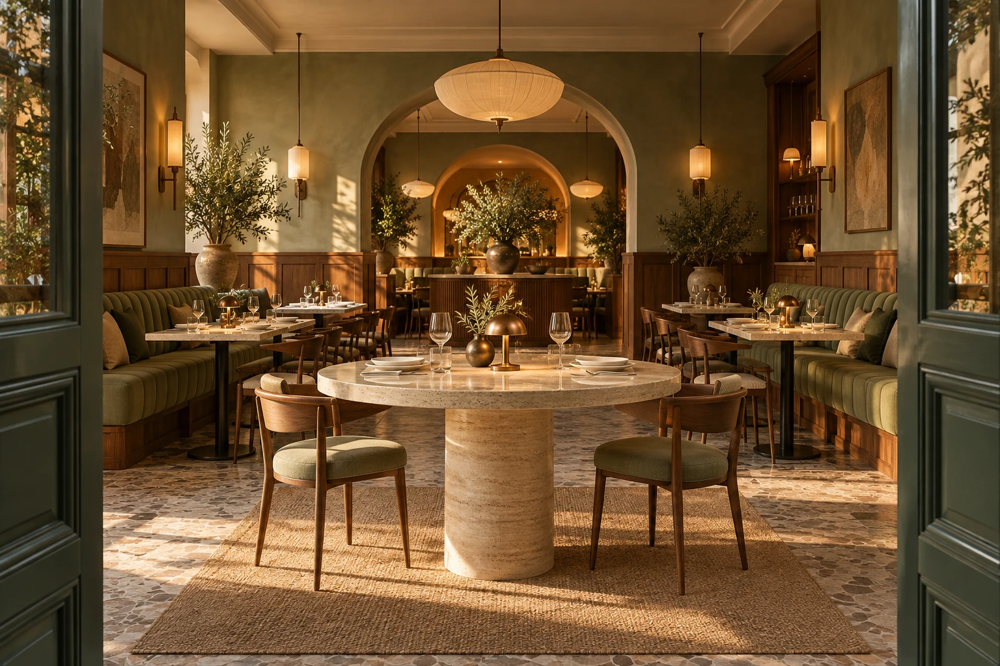
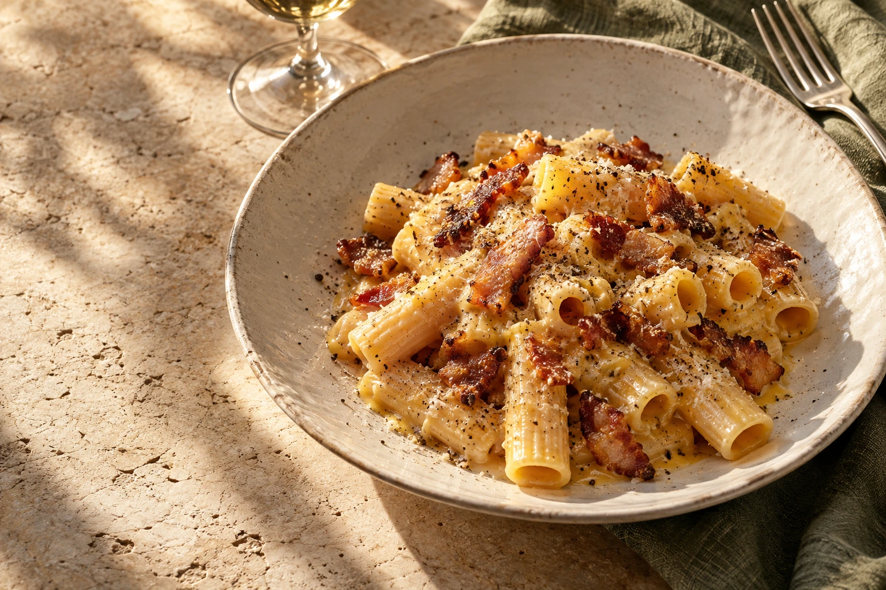
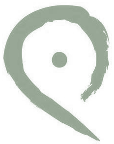
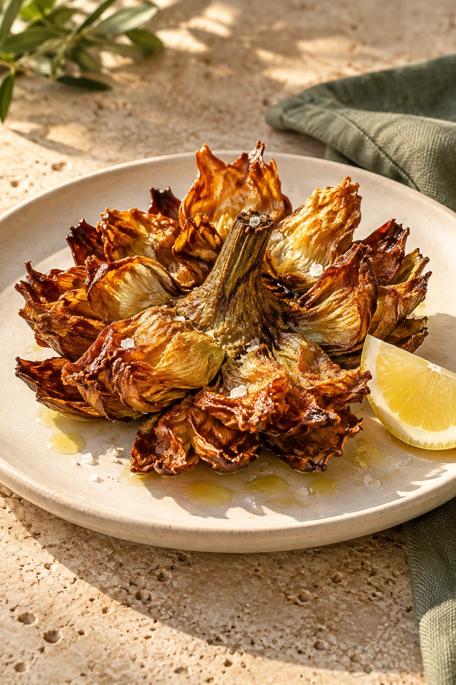
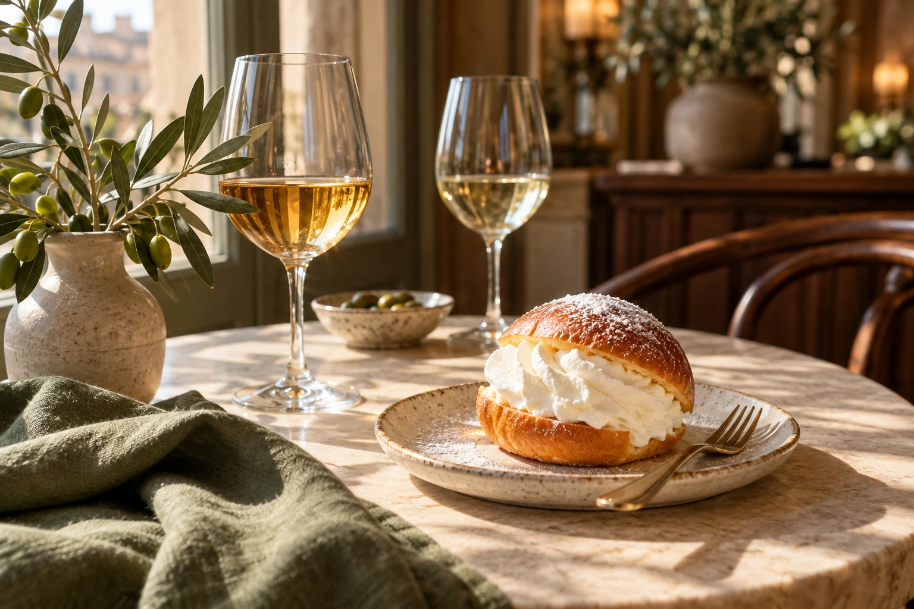

UN NUOVO POSTO, A ROMAEntra.

Entra.
Sei nel posto giusto.
Quel Posto — Bistrot Romano
ROMANA NELL’ANIMA. CONTEMPORANEA NELLO SPIRITO.La felicità ha
AMBIENTE CONCEPT
La felicità ha
un posto a tavola.
Le radici nella tradizione. Il piacere di sentirsi a casa.
01 — IL NOSTRO POSTO
Ci sono posti dove mangi. E posti dove ti senti a casa.
Abbiamo immaginato un bistrot che prendesse l’anima della cucina romana — sincera, generosa, essenziale — e la portasse in un ambiente contemporaneo, fatto di calore, attenzione e convivialità.
Quel Posto è questo.
Un tavolo, una buona conversazione.
E la voglia di tornare.

SEMPLICE SOLO IN APPARENZA.Radiciromane.
LE COSE FATTE BENEIl sapore
Il sapore
di sempre.
Un nuovo
incontro.
Un carciofo croccante. La cremosità di una carbonara. Il profumo del pane sulla tavola. La nostra idea parte da qui: sapori riconoscibili, cura nei dettagli e il piacere di stare insieme.
Entra in cucina ↗
03 — IL TEMPO DI STARE BENEUn altro calice.
Un altro calice.
Un’altra storia.
Ancora cinque minuti.
Per i pranzi che diventano pomeriggi.
Per le cene in cui nessuno guarda l’ora.
04 — CI VEDIAMO QUIIl tuo prossimo
Il tuo prossimo
posto del cuore.
Stiamo preparando la tavola.
Quel Posto — Bistrot Romano sta per arrivare a Roma.
DOVE
Roma, Italia
Indirizzo in arrivoQUANDO
Prossima apertura
Data e orari in arrivoROMA
IL TUO NUOVO PUNTO DI RIFERIMENTO.La posizione esatta sarà annunciata dal locale.C’È UN POSTO PER TETu porta la compagnia.
Tu porta la compagnia.
Al resto pensiamo noi.
Prenotazione online · Anteprima del servizio
Quando aprite?+
Quel Posto sta per aprire a Roma. La data ufficiale, l’indirizzo e gli orari verranno aggiunti non appena comunicati dal ristorante.
Posso già prenotare online?+
In questa bozza puoi provare il percorso di prenotazione. Nessuna richiesta viene inviata e nessun tavolo è riservato: il servizio sarà collegato al sistema del ristorante prima dell’apertura.
Allergie o esigenze alimentari?+
Nel modulo trovi uno spazio per indicare le tue esigenze. Menù, allergeni e disponibilità delle preparazioni dovranno essere confermati direttamente dal personale prima di prenotare.